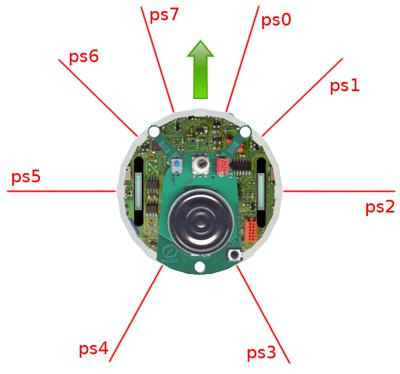

Tutorial3 <<
Previous Next >> Tutorial5
Tutorial4
導引課程 4：更多關於控制器的內容
現在我們開始討論與編程機器人控制器相關的主題。我們將設計一個簡單的控制器來避開在前面的教程中創建的障礙物。
本教程將介紹 Webots 中機器人編程的基礎。在本章結束時，您應該了解場景樹節點與控制器 API 之間的關聯，如何初始化和清理機器人控制器，如何初始化機器人設備，如何獲取傳感器值，如何指令執行器，以及如何編程一個簡單的反饋迴路。
本教程僅涉及 Webots 功能的正確使用。機器人算法的研究超出了本教程的目標，因此不會在此處討論。掌握一些基本的編程知識是解決本章問題的必要條件（任何 C 教程應該都是足夠的入門介紹）。在本章的末尾，提供了進一步的機器人算法的鏈接。
新的模擬場景與控制器
實作 #1：將之前的世界保存為 collision_avoidance.wbt。從文件/新建/新建機器人控制器菜單項中創建一個新的 C（或任何其他語言）控制器，命名為 epuck_avoid_collision（對於 C++ 和 Java，命名為 EPuckAvoidCollision）。修改 E-puck 節點的控制器字段以將其與新控制器關聯。
Hands on #1: Save the previous world as collision_avoidance.wbt. Create a new C (or any other language) controller called epuck_avoid_collision (for C++ and Java call it EPuckAvoidCollision instead) from the File / New / New Robot Controller... menu item. Modify the controller field of the E-puck node in order to associate it to the new controller.
Reminder: How to create a new controller?
Select the File / New / New Robot Controller... menu item and choose your programming language and the file name.
了解 e-puck 模型
控制器編程需要一些與 e-puck 模型相關的信息。為了創建碰撞檢測算法，我們需要讀取其炮塔周圍的 8 個紅外距離傳感器的值，並且我們需要驅動其兩個輪子。下圖展示了距離傳感器在炮塔周圍的分佈情況以及 e-puck 的方向。
距離傳感器在機器人層次結構中由 8 個 DistanceSensor 節點建模。這些節點通過它們的名稱字段進行引用（從 ps0 到 ps7）。我們將在稍後解釋這些節點是如何定義的。目前，只需注意可以通過 Webots API 的相關模塊訪問 DistanceSensor 節點（通過 webots/distance_sensor.h 標頭文件）。距離傳感器返回的值在 0 到 4096 之間縮放（線性分段到距離）。4096 表示測量到大量光（障礙物很近），而 0 表示沒有測量到光（沒有障礙物）。
控制器 API 是一個編程接口，它使您能夠訪問機器人的模擬傳感器和執行器。例如，包含 webots/distance_sensor.h 文件允許使用 wb_distance_sensor_* 函數，通過這些函數可以查詢 DistanceSensor 節點的值。API 函數的文檔可以在參考手冊中找到，並附有每個節點的描述。

e-puck 模型的上視圖。綠色箭頭表示機器人的前方。紅色線條代表紅外距離傳感器的方向。字符串標籤對應於距離傳感器的名稱。

簡單回饋迴路的 UML 狀態機
編寫控制器程序
我們想要編程一個非常簡單的碰撞避免行為。您將編程使機器人向前行駛，直到前方距離傳感器檢測到障礙物，然後轉向無障礙物的方向。為了做到這一點，我們將使用在圖中的 UML 狀態機中所示的簡單反饋迴路。
此控制器的完整代碼在下一小節中給出。
動手操作 #2：在控制器文件的開頭，添加對應於 Robot、DistanceSensor 和 Motor 節點的導入指令，以便能夠使用相應的 API：
from controller import Robot, DistanceSensor, Motor
在導入語句之後，定義一個變量，用於定義每個物理步長的持續時間。這個宏將用作 Robot::step 函數的參數，它也將用於啟用設備。這個持續時間以毫秒為單位，必須是 WorldInfo 節點的 basicTimeStep 字段值的倍數。
TIME_STEP = 64
主函數是控制器程序開始執行的地方。傳遞給主函數的參數由 Robot 節點的 controllerArgs 字段給出。必須使用 wb_robot_init 函數初始化 Webots API，並使用 wb_robot_cleanup 函數清理它。
動手操作 #3：在 Python 中沒有主函數，程序從文件的開始處開始執行：
# create the Robot instance.
robot = Robot()
# initialize devices
# feedback loop: step simulation until receiving an exit event
while robot.step(TIME_STEP) != -1:
# read sensors outputs
# process behavior
# write actuators inputs
機器人設備由 WbDeviceTag 引用。WbDeviceTag 由 wb_robot_get_device 函數檢索。然後，它在每個涉及此設備的函數調用中用作第一個參數。像 DistanceSensor 這樣的傳感器在使用前必須啟用。enable 函數的第二個參數定義了傳感器的刷新率。
動手操作 #4：在註釋 // initialize devices 之後，獲取並啟用距離傳感器，如下所示：
# initialize devices
ps = []
psNames = [
'ps0', 'ps1', 'ps2', 'ps3',
'ps4', 'ps5', 'ps6', 'ps7'
]
for i in range(8):
ps.append(robot.getDevice(psNames[i]))
ps[i].enable(TIME_STEP)
初始化設備後，初始化馬達：
leftMotor = robot.getDevice('left wheel motor')
rightMotor = robot.getDevice('right wheel motor')
leftMotor.setPosition(float('inf'))
rightMotor.setPosition(float('inf'))
leftMotor.setVelocity(0.0)
rightMotor.setVelocity(0.0)
在主循環中，在註釋 # read sensors outputs 之後，按如下方式讀取距離傳感器的值：
# read sensors outputs
psValues = []
for i in range(8):
psValues.append(ps[i].getValue())
在主循環中，在註釋 # process behavior 之後，檢測是否發生碰撞（即距離傳感器返回的值大於閾值），如下所示：
# detect obstacles
right_obstacle = psValues[0] > 80.0 or psValues[1] > 80.0 or psValues[2] > 80.0
left_obstacle = psValues[5] > 80.0 or psValues[6] > 80.0 or psValues[7] > 80.0
最後，使用有關障礙物的信息來驅動車輪，如下所示：
MAX_SPEED = 6.28
...
# initialize motor speeds at 50% of MAX_SPEED.
leftSpeed = 0.5 * MAX_SPEED
rightSpeed = 0.5 * MAX_SPEED
# modify speeds according to obstacles
if left_obstacle:
# turn right
leftSpeed = 0.5 * MAX_SPEED
rightSpeed = -0.5 * MAX_SPEED
elif right_obstacle:
# turn left
leftSpeed = -0.5 * MAX_SPEED
rightSpeed = 0.5 * MAX_SPEED
# write actuators inputs
leftMotor.setVelocity(leftSpeed)
rightMotor.setVelocity(rightSpeed)
Save your code by selecting the File / Save Text File menu item. Reload the world.
控制器代碼
以下是前一小節中詳細介紹的控制器完整代碼。
from controller import Robot, DistanceSensor, Motor
# time in [ms] of a simulation step
TIME_STEP = 64
MAX_SPEED = 6.28
# create the Robot instance.
robot = Robot()
# initialize devices
ps = []
psNames = [
'ps0', 'ps1', 'ps2', 'ps3',
'ps4', 'ps5', 'ps6', 'ps7'
]
for i in range(8):
ps.append(robot.getDevice(psNames[i]))
ps[i].enable(TIME_STEP)
leftMotor = robot.getDevice('left wheel motor')
rightMotor = robot.getDevice('right wheel motor')
leftMotor.setPosition(float('inf'))
rightMotor.setPosition(float('inf'))
leftMotor.setVelocity(0.0)
rightMotor.setVelocity(0.0)
# feedback loop: step simulation until receiving an exit event
while robot.step(TIME_STEP) != -1:
# read sensors outputs
psValues = []
for i in range(8):
psValues.append(ps[i].getValue())
# detect obstacles
right_obstacle = psValues[0] > 80.0 or psValues[1] > 80.0 or psValues[2] > 80.0
left_obstacle = psValues[5] > 80.0 or psValues[6] > 80.0 or psValues[7] > 80.0
# initialize motor speeds at 50% of MAX_SPEED.
leftSpeed = 0.5 * MAX_SPEED
rightSpeed = 0.5 * MAX_SPEED
# modify speeds according to obstacles
if left_obstacle:
# turn right
leftSpeed = 0.5 * MAX_SPEED
rightSpeed = -0.5 * MAX_SPEED
elif right_obstacle:
# turn left
leftSpeed = -0.5 * MAX_SPEED
rightSpeed = 0.5 * MAX_SPEED
# write actuators inputs
leftMotor.setVelocity(leftSpeed)
rightMotor.setVelocity(rightSpeed)
解決方案：世界文件
要將您的世界與解決方案進行比較，請轉到您的文件並找到在 Tutorial1 中創建的名為 my_first_simulation 的文件夾，然後轉到 worlds 文件夾並使用文本編輯器打開正確的世界。此解決方案與其他解決方案位於解決方案目錄中。
結論
以下是您剛剛學到的關鍵點的快速摘要：
- 控制器入口點是主函數，就像任何標準的 C 程序一樣。
- 在調用 wb_robot_init 函數之前，不應調用任何 Webots API 函數。
- 離開主函數之前要調用的最後一個函數是 wb_robot_cleanup 函數。
- 設備由其設備節點的名稱字段引用。可以通過 wb_robot_get_device 函數檢索節點的引用。
- 每個控制器程序都作為 Webots 進程的子進程執行。控制器進程不與 Webots 共享任何內存（除了相機的圖像），並且它可以在與 Webots 不同的 CPU（或 CPU 核心）上運行。
- 控制器代碼鏈接到 libController 動態庫。該庫處理控制器與 Webots 之間的通信。
本節更詳細地解釋了控制器編程。您應該仔細閱讀以進一步了解在 Webots 中的機器人編程。
Tutorial3 <<
Previous Next >> Tutorial5